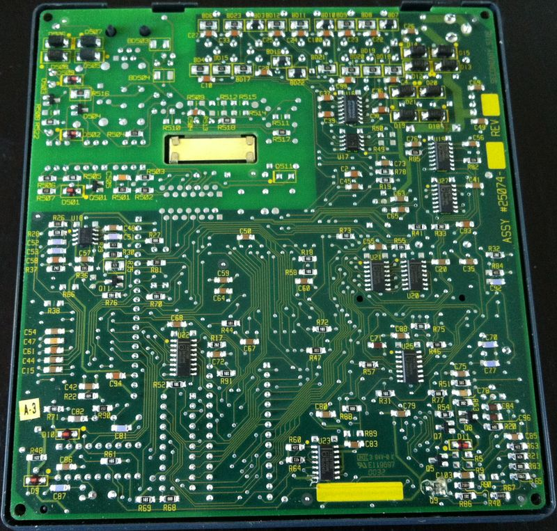
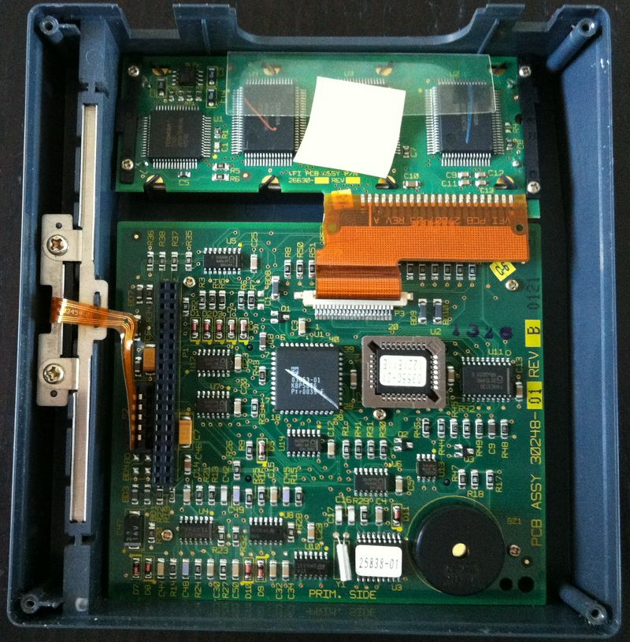

The OMNI-395 payment terminal inside
First time I encountered specialized mini- and micro- computers was at the beginning of 2000 when I got a job in the plastic card processing department of a bank. I started developing software for Point Of Sale (POS) terminals. POS is a standalone mini-computer, usually with a screen, keyboard, magnetic stripe reader, and often a printer, plus nowadays with a chip and pin reader.
My first POS was VeriFone OMNI-395. It was based on Zilog Z180, up to 1M non-volatile memory (for transaction logs, for instance), a Hayes compatible modem (up to 2400BPS), 12 volts RS232 ports for a PIN pad, a serial printer and other devices (alas, not all RS232 ports had all standard line causing inventing a handmade wheel for the flow control.), and an LCD-screen with loadable fonts.

The architecture was pretty interesting. The user code was executed inside a VM running on top of native Z180 code. It allowed dealing with larger amounts of memory which Z180 can address directly, and implementing dynamically loadable user modules (R-modules). Unfortunately it affected overall performance, and, for example, even table-driven CRC16 on 5-10KB of data took a few seconds. Also, the stack size in the C language was quite limited, and sometimes it was worth implementing, for example, the “sprintf” function manually to avoid random crashes due to stack overflows.

But, frankly speaking, comparing to terminal from other vendors back those days (Injenico, Nurit, etc.) where you had to deal with using raw memory blocks, switching pages manually, etc., VeriFone (TXO) provided almost standard C library. In TXO C you dealt with persistent files, serial ports, LCD and other peripherals with read/write/ioctl functions.
The TXO C compiler supported support also loadable modules (R-modules). Such modules can be loaded on the fly from the user code (similar to overlays or CHAIN in the classic BASIC).
A few days ago The Frost Father presented me an old good OMNI-395. Do you want to see it inside? Indeed!
Turn it on, and, (surprise!) it still runs my firmware.

Inside.

The top board, under the keypad, and the bottom one, with connectors.


If I find the compiler and loader I’ll try to write a little demo.
Alas, there is no official documentation about OMNI-395 hardware, but the programmer manuals only cover the standard library and the VM a little bit.
Of course, OMNI-395 can be used as a generic controller. It can communicate via the standard RS232, plus DTR/RTS can be digital output and CTS/DSR – inputs.
Ideally, it is possible to disassemble the ROM (only 64K of Z180 code), and then reverse engineer the architecture. It will allow programming OMNI-395 directly in Z180 assembly.
P.S.
Despite of changing the hardware platform a few times after OMNI-395, VeriFone also provides very good backward compatibility in the programmer’s API. So, porting to newer models is quite simple. After OMNI-395 I ported our POS software to OMNI-3350, 3750, VX510, VX610.
An finally, by the #cardpayments tag at Twitter I post pictures of POS, PIN pads, ATM and other plastic card payment machines I come across. Please, join.
Disclaimer